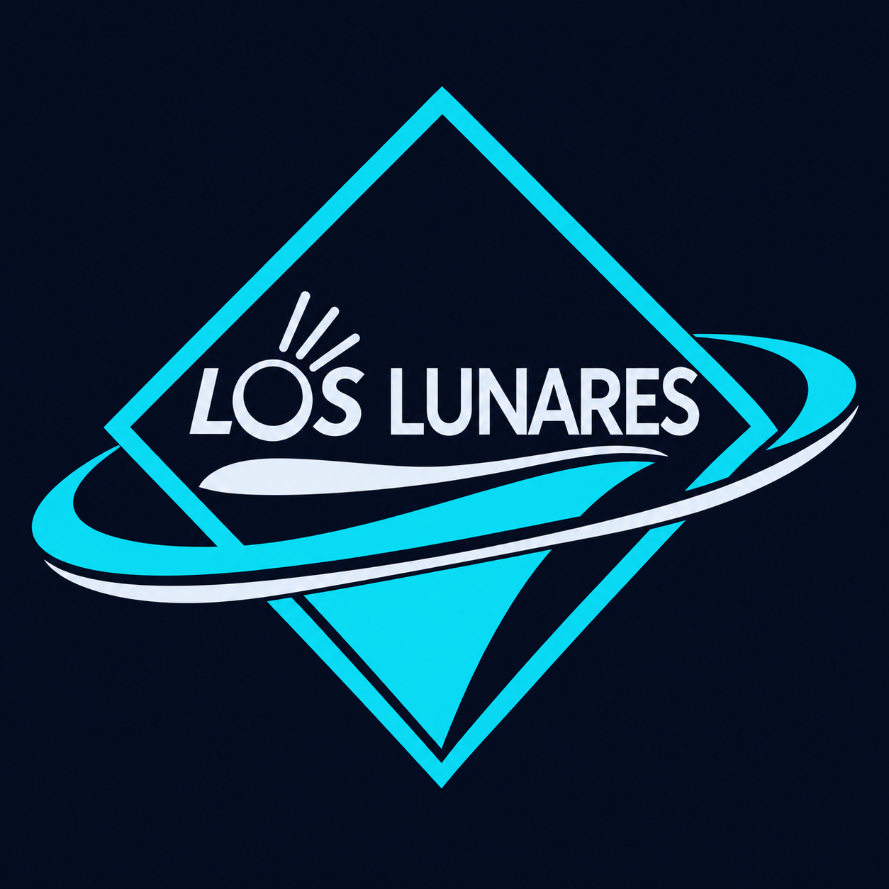
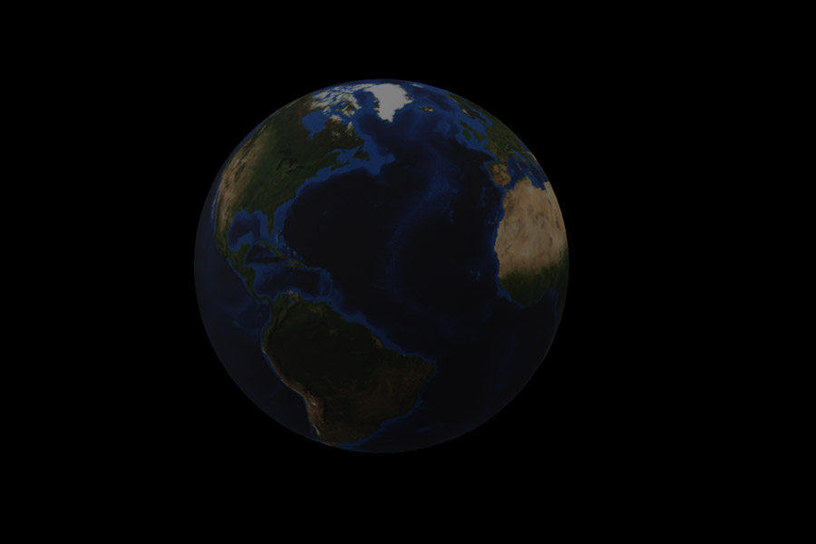
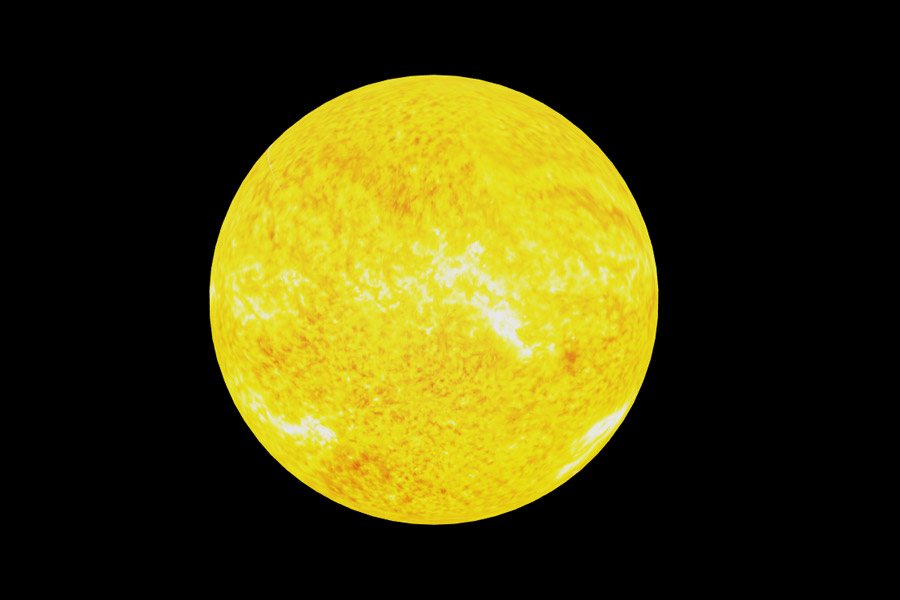

Mi primera misión lunar
Armá una misión paso a paso. Tocá, compará y descubrí por qué cada decisión importa.
- Decisiones simples con consecuencias visibles
- Pistas de energía, sombra y comunicación
- Tu plan de misión al terminar

LOS LUNARESLANDING SITE NAVIGATOR¿Dónde alunizar? ¿Cuándo habrá luz? ¿Cómo volvemos a comunicarnos con la Tierra? Exploralo a tu manera.


Armá una misión paso a paso. Tocá, compará y descubrí por qué cada decisión importa.
Compará sitios y fechas con horizontes, ventanas temporales y parámetros de ingeniería.
Prototipo educativo: datos astronómicos NASA de 2025–2026 y horizontes LOLA muestreados. No es un simulador de vuelo ni una herramienta operativa.
✦ Practicar lectura del terreno con Félicette ↗ · Recortes reales de Site01; criterio educativo.
Aprendemos con escenarios de ejemplo. Las decisiones usan horizontes de práctica y energía estimada. El globo incorpora altitud LOLA; los casos NASA guardados tienen sus propias fechas. No se calculan trayectorias ni temperatura del rover.
Elegí dónde y cuándo alunizar. Compará luz solar y comunicación con la Tierra.
Modelo 3D · NASA
Arrastrá para rotar · zoomModelo 3D · NASA
Arrastrá para rotar · zoomPuntos de alunizaje, no límites de zonas. Selección basada en LROC 2016; no incluye todas las misiones. Los símbolos se amplían para facilitar su selección.
Elegí un sitio y una fecha para explorar luz solar y comunicación directa.
La curva marca el relieve del horizonte local. Un objetivo es visible cuando queda por encima de ella en su dirección.
—
La luz disponible orienta el potencial solar; no equivale a potencia eléctrica generada.—
Visibilidad geométrica hacia la Tierra; el enlace también depende de la estación y del sistema de radio.Ventanas calculadas sobre el horizonte LOLA muestreado; no equivalen a disponibilidad de servicio de radio.
Área ilustrativa de 1 × 1 km. Las pendientes se calculan a partir de diferencias centrales, con celdas de 5 m.
La inclinación máxima local del suelo. No mide si una montaña distante bloquea la Tierra.
El límite no es un requisito de ningún vehículo. La aptitud requiere considerar rugosidad, rocas, escala y errores del DEM.
Abrir dataset LOLA de 5 m ↗LOLA Site04: elevaciones surf.tif, pendientes slp.tif e incertidumbres toterr.tif / slperr.tif. El escenario de práctica no carga GeoTIFF; el caso NASA de arriba utiliza sus resultados procesados. El perfil CSV se puede importar en Radioenlace.
Modelo lunar esférico, sin refracción. El margen ideal no predice un enlace operativo si existe obstrucción. No modela multitrayecto, difracción, ruido ni adaptación de modulación.
CSV UTF-8 con columnas distance_m,elevation_m. Distancias crecientes desde 0, en metros; al menos tres puntos. Importar reemplaza únicamente este perfil.
Cambiá el lugar o la fecha de cada escenario y compará iluminación y visibilidad terrestre durante los siguientes siete días.
| Escenario | Luz solar | Tierra visible | Ambos visibles | Mayor sombra | Mayor corte |
|---|
Cada porcentaje se calcula en el intervalo de siete días de su escenario. Muestras horarias; relieve real de Site01 y radio limitado. La comparación incluye un balance energético simplificado; la luz por sí sola no equivale a watts y la visibilidad no garantiza servicio de radio. Ubicaciones de Site01, no sitios aprobados para alunizaje.
La orientación modifica la incidencia. La conversión del panel y las pérdidas modifican la energía eléctrica. La batería solo almacena el excedente que puede aceptar.
Incidencia: coseno entre la normal del panel y la dirección solar, recortado a cero y condicionado por el horizonte. Potencia = 1.361 W/m² × área × eficiencia × incidencia × (1 − pérdidas). La irradiancia se asume constante a distancia solar media; no se modelan eclipses ni variación de distancia.
Las pérdidas agregadas son un supuesto de escenario: no son un porcentaje medido de polvo, temperatura ni «clima». No hay lluvia ni nubosidad terrestre. Temperatura del panel, degradación, polvo, límites de carga, autodescarga y gestión térmica necesitan modelos adicionales.
El ciclo solar medio dura aproximadamente 29 días, 12 horas y 44 minutos (708,73 h). Las 709 muestras son una aproximación. Día y noche no se reparten necesariamente en mitades en un sitio polar: hay que calcular el horizonte y las fechas.
NASA · irradiancia de referencia · NASA · ciclo lunar · NASA · entorno térmico
Estimación aislada de autonomía a consumo constante. El resultado no simula temperatura, batería real ni toda la misión.
Autonomía ideal = energía utilizable / consumo
El trabajo sobre fuentes nucleares para misiones argentinas considera unidades calefactoras de radioisótopos (RHU) para supervivencia durante la noche lunar.
Una RHU puede aportar calor. No alimenta por sí sola el transmisor ni elimina una obstrucción de comunicaciones.
Leer estudio de factibilidad ↗Referencia conceptual. No se incorporan prestaciones nucleares ni temperaturas operativas a esta simulación.
Elegí una sección para explorarla y contar qué entendiste, qué te falta y qué mejorarías. Podés evaluar más de una.
El borrador se guarda solo en este navegador. Al terminar, copiá o descargá el comentario y envialo al equipo; no se envía automáticamente.
| Componente | Estado | Fuente / alcance |
|---|---|---|
| Fase, distancia y puntos subsolar / subterrestre | Datos NASA incluidos | SVS 5415 · datos horarios de 2025 y 2026 |
| Azimut y elevación local | Aproximación calculada | Luna esférica, puntos subsolar/subterrestre; corrección de paralaje terrestre. No Horizons/SPICE. |
| Textura visual | Imagen de referencia | Cory Gross / MoonDemo · Clementine · licencia MIT incluida. No se usa como DEM. |
| Terreno, pendientes y horizonte | Sintéticos | Superficies de prueba en los gráficos de práctica; el caso NASA de arriba incorpora LOLA procesado. |
| Perfil importado | Datos del usuario | Procesamiento local en el navegador; sin subida a servidor. |
| Radioenlace | Modelo simplificado | Curvatura lunar, Fresnel y pérdidas en espacio libre. Sin propagación completa. |
18 puntos de Apollo, Surveyor, Luna y Chang’e 3 a partir de LROC / ASU, 28 de julio de 2016. Coordenadas ME y longitudes este normalizadas a −180…180°. Los módulos Apollo también se contrastaron con NASA NSSDCA. La textura es ilustrativa y la proyección simplificada no sirve para navegación precisa. Este catálogo es independiente de los puntos demostrativos del planificador.
LOLA de 5 m por sitio + LOLA regional + JPL Horizons. Hay que reconciliar referencias, alturas, cobertura y resolución efectiva.
USGS · mosaico LROC WAC de 100 m: referencia para una futura capa de imagen; no está incorporado ni sustituye las elevaciones.
Modelo de la Tierra 3D · NASA incluido localmente. Luna, Tierra y Sol se amplían con fines de exploración; sus tamaños, posiciones y distancias en la portada son ilustrativos. La evaluación del sitio se realiza en el gráfico del horizonte local y en las series temporales.
Modelo Sun 3D Model · NASA Solar System Exploration, archivo GLB incluido localmente. Visualización con Google model-viewer 1.10.1, la versión utilizada por el visor de referencia; licencia Apache 2.0 incluida. El modelo es visual y no modifica los cálculos de iluminación.
NASA Lunar Surface Propagation · JPL Link Design Handbook
Adaptación de la paleta, navegación lateral y tarjetas del Dashboard ZCS.COM proporcionado por el equipo. Esta aplicación es independiente; no incorpora su base SQLite, agentes, configuración ni historial de red.
Prototipo educativo independiente, sin aval de NASA. Los resultados no deben usarse para operaciones de vuelo.